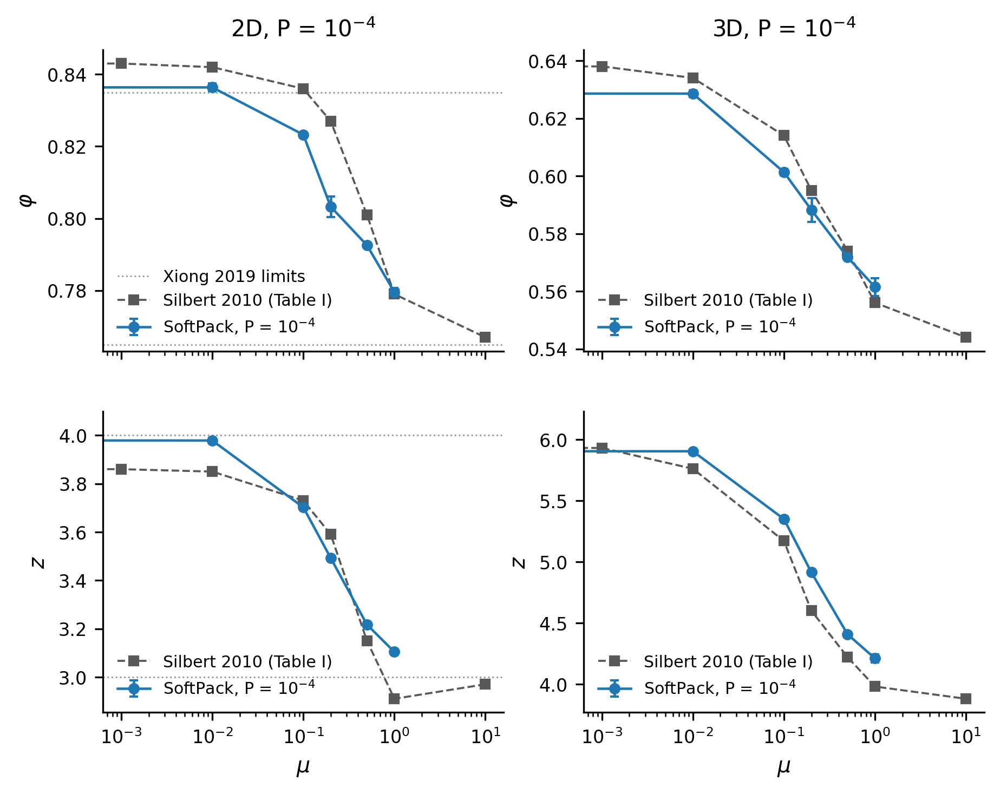

Friction (Silbert 2010)
Up: Benchmarks
[Silbert2010] compressed soft spheres towards jamming for a range of friction coefficients and extrapolated the jamming packing fraction $\varphi_c^{\mu}$ and coordination $z_c^{\mu}$ at $P \to 0$. The packing fraction falls from random close packing, $\varphi_{\text{rcp}} \approx 0.64$, to random loose packing, $\varphi_{\text{rlp}} \approx 0.55$, as friction grows; the coordination falls from about 6 to 4. The 2D bidisperse row of the same table runs from $0.843$ to $0.767$, with $z$ from $3.96$ to $2.97$.
Figure

Packing fraction (top) and coordination (bottom) against $\mu$, for 2D bidisperse disks (left) and 3D monodisperse spheres (right). Filled circles are SoftPack at $P = 10^{-4}$; open squares are the extrapolated values of [Silbert2010]; the dotted lines in the 2D panel are the compression-protocol limits of [Xiong2019].
Numbers
| $D$ | $\mu$ | $\varphi$ SoftPack | $\varphi$ Silbert | $z$ SoftPack | $z$ Silbert |
|---|---|---|---|---|---|
| 2 | 0 | 0.8413 | 0.843 | 4.042 | 3.96 |
| 2 | 0.01 | 0.8364 | 0.842 | 3.979 | 3.85 |
| 2 | 0.1 | 0.8233 | 0.836 | 3.702 | 3.73 |
| 2 | 0.2 | 0.8032 | 0.827 | 3.492 | 3.59 |
| 2 | 0.5 | 0.7926 | 0.801 | 3.217 | 3.15 |
| 2 | 1 | 0.7796 | 0.779 | 3.104 | 2.91 |
| 3 | 0 | 0.6369 | 0.639 | 6.111 | 5.96 |
| 3 | 0.1 | 0.6013 | 0.614 | 5.349 | 5.17 |
| 3 | 0.2 | 0.5882 | 0.595 | 4.913 | 4.60 |
| 3 | 0.5 | 0.5718 | 0.574 | 4.407 | 4.22 |
| 3 | 1 | 0.5615 | 0.556 | 4.210 | 3.98 |
What agrees and what does not
The 3D monodisperse row, which is the closest match to Silbert's system, agrees within $0.013$ in packing fraction and $0.31$ in coordination over the full range. The endpoints of the 2D row also agree: frictionless SoftPack gives $0.8413$ against $0.843$, and $\mu = 1$ gives $0.7796$ against $0.779$.
In 2D at $\mu = 0.1$ to $0.5$ SoftPack sits up to $0.024$ below Silbert's extrapolated values. This is a protocol difference, not a failed check. Silbert approaches jamming by decreasing the packing fraction from a dense state; SoftPack compresses from a dilute start. [Xiong2019], who use isotropic compression, report $\varphi_J$ from about $0.835$ to $0.765$ and $z_J$ from 4 to 3, with a crossover near $\mu_c = 0.1$; the SoftPack 2D curve lies inside those limits and follows the compression protocol. The 2D coordination at $\mu = 1$ is $3.10$ against Silbert's $2.91$, and the frictionless anchors show the same small positive offset ($+0.08$ in 2D, $+0.15$ in 3D), so the offset is finite-size, not a friction-model error.
Reproduce
The run script, the raw CSV and the analysis script are in benchmarks/paper_figures.
References
- [Silbert2010] Leonardo E. Silbert (2010). Jamming of frictional spheres and random loose packing. Soft Matter 6, 2918–2924. doi:10.1039/c001973a.
- [Xiong2019] Fansheng Xiong, Philip Wang, Abram H. Clark, Thibault Bertrand, Nicholas T. Ouellette, Mark D. Shattuck, Corey S. O’Hern (2019). Comparison of shear and compression jammed packings of frictional disks. Granular Matter 21, 109. doi:10.1007/s10035-019-0964-9.